Toda Lab Project Soka University Faculty of Engineering
現在のメンバー紹介
現在のメンバー紹介
最終更新日：2017年9月30日

|
戸田 龍樹 |
| 工学部 工学研究科長・教授 | |
| 昭和59年3月北海道大学水産学部卒業、平成2年3月東京大学大学院農学系研究科博士課程修了（農学博士取得）後、東京大学海洋研究所特別研究員（日本学術振興会）、平成3年4月創価大学工学部講師、平成15年同大教授。 | |
| 専門は修復生態学、環境科学、生態工学。趣味が仕事か、仕事が趣味か。最近高血圧ぎみですが、酒で血圧が下がることがわかり安心しています。学生にはとても優しい（？）。 |

|
岸 正敏 |
| 理工学部 助教 | |
| 2011年アメリカ創価大学卒業、2018年創価大学大学院工学研究科博士後期課程（博士号取得）後、助教として勤務。 | |
| 専門は微細藻類の生産工学。廃棄物から抽出した栄養塩を利用した微細藻類培養プロセスや、機能性リアクターの開発、微細藻類を利用した汚水処理などの研究を行っています。来るものは拒まずの精神で、様々な分野に興味を持って日々勉強しております。 |
| 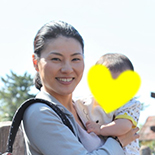 | 吉木 朝子 |
| 研究補佐員（秘書） | |
| 創価大学大学院工学研究科で博士号を取得。他研究所でポスドク等を経て、現在に至る。 | |
| 現在は研究室の秘書として勤務していますが、動物プランクトンの長期変動の研究に携わってきました。趣味はガーデニングと山登りと旅行。お花が好きですが、今年はサツマイモも栽培しました。海外旅行はご無沙汰です。最近ご近所でメダカを頂き庭で飼育（ほぼ放置）中です。今度は子供と一緒にビオトープを作りたいです。 |

|
名取 則明 |
| 工学研究科 環境共生工学専攻 博士課程 | |
| 2014年創価大学大学院工学研究科 環境共生工学専攻 博士前期課程修了、2014年4月同 博士後期課程に入学 | |
| 海産性動物プランクトン、中でもカイアシ類の初期発達段階であるノープリウス幼生の摂餌生態について研究しています。研究は大変な事も多いですが、その分やりがいもあります。日々前進、日々成長をモットーに、研究に打ち込んでいきます。 |
| 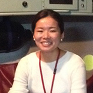 | 平原 南萌 |
| 工学研究科 環境共生工学専攻 博士課程 | |
| 2014年創価大学大学院工学研究科 環境共生工学専攻 博士前期課程修了、2014年4月同 博士後期課程に入学 | |
| 海産性動物プランクトンの生理生態学的応答について研究しています。研究を通して、国外・国内問わず、様々なところへ行かせてもらい、人に出会い、充実した毎日を送っています。将来の具体的な夢はまだ未定ですが、今ここで学んでいることを活かして、人や社会の役に立つ仕事がしたいです。 |

|
菅井 洋太 |
| 工学研究科 環境共生工学専攻 博士課程 | |
| 2016年創価大学大学院工学研究科 環境共生工学専攻 博士前期課程修了、2016年4月同 博士後期課程に入学 | |
| 学部2年次から本研究室で研究を始めました。研究テーマは「海面ミクロ層（SML）に生息する微生物の役割」であり、一般に海洋生態系の微生物ループに興味があります。フィールド調査が好きで、研究活動を通じて世界の果てまで行ってみたいです。博士課程に進学し、将来は研究や国際協力関係の仕事をしたいと思っています。最近は仕事終わりに甘いものを食べることに喜びを感じています。 |
| 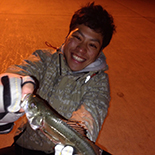 | 高山 佳樹 |
| 工学研究科 環境共生工学専攻 博士課程 | |
| 2017年創価大学大学院工学研究科 環境共生工学専攻 博士前期課程修了、2017年4月同 博士後期課程に入学 | |
| 高校時代は文系クラス、創価大学教育学部出身で本研究室に飛び込んだ変わり者です。研究室の仲間にお世話になりながら相模湾の動物プランクトンについて研究を行っています。趣味は中学から大学まで続けたバレーボール、釣り、キャンプなどのアウトドア全般です。常に元気にタフに笑顔で楽しく、自分の好奇心を追及し、人に役立つ研究を行っていきます。 |
| 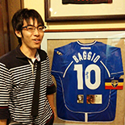 | 大竹 正弘 |
| 工学研究科 環境共生工学専攻 博士課程 | |
| 2017年創価大学大学院工学研究科 環境共生工学専攻 博士前期課程修了、2017年4月同 博士後期課程に入学 | |
| 長崎県の五島列島にて実施されている「藻場再生プロジェクト」に携わっています。趣味は、ピアノ演奏とサッカー観戦、映画鑑賞です。将来は、地方の人口減少に歯止めをかけるため、新たな産業を創ることに貢献したいです。 |
| 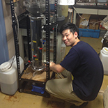 | 小寺 敏光 |
| 工学研究科 環境共生工学専攻 博士課程 | |
| 2017年創価大学大学院工学研究科 環境共生工学専攻 博士前期課程修了、2017年4月同 博士後期課程に入学 | |
| 微生物の凝集体であるグラニュールによる排水のメタン発酵‐脱窒素同時処理について研究しています。趣味はダンス、映画、youtubeを観ることです。将来は、途上国の持続的な開発の支援に携わる仕事に就きたいと思っています。 |

|
Anupreet Kaur |
| Ph.D course student, Department of Envitomnental Engineering for Synbiosis, Graduate School of Engineering | |
| 2016 MS in Department of Environmental Sciences, JAwaharlal Nehru University, India. 2017 April to current Ph. D. in Engineering, Soka University, Japan. | |
| Hi ! My name is Anupreet and I am from India.I am pursuing PhD here and consider myself so lucky to be always surrounded by such an amazing and hardworking people in this laboratory. I will be researching on micro algae and really looking forward to it. Personally, I like travelling and I am a big time foodie. I wish to work for the betterment of the society with the help of my research background and hope to achieve this as soon as possible with all my dedication. |

|
Maria Cecilia Del Salangsang |
| Ph.D course student, Department of Envitomnental Engineering for Synbiosis, Graduate School of Engineering | |
| MAEd – Physics, Bulacan State University BS Chemical Engineering, Technological Institute of the Philippines Faculty member – University of the East – Caloocan | |
| I would like to pursue a study on the seasonal variation of chemical properties and anaerobic digestibility of landfill leachate in Metro Manila. I am confident that from the lessons, equipping and experiences I will gain here at Soka University I will be able to contribute to relevant researches and publications that will help mitigate environmental concerns especially focusing on solid waste and wastewater treatment. My hobbies include cross-stitching, reading and watching films. I have two daughters, Kim and Janine. Back in the Philippines, during weekend we love to spend time watching TV series together while pigging out on chips. For now, we just enjoy exchanging wacky pictures and emails. |
| 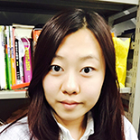 | 夏 元君 |
| 工学研究科 環境共生工学専攻 修士課程 | |
| 私は夏元君です、中国から来ました。2015年4月に入学しました。専門は藻類の回収です。趣味：食べる（いろいろな国の美食）、旅行、カラオケです。卒業したら、帰国して環境についての仕事に就きたいと思います。日本での留学経験を一生の忘れられない思い出として大切にします。 |

|
関根 睦美 |
| 工学研究科 環境共生工学専攻 修士課程 | |
| 微生物を用いた廃水処理と排ガス脱硫処理の統合・高効率化を研究しています。趣味は、読書・食べることです。友達と話したり、のんびりするのが好きです。最近は「迷ったらやってみる」をモットーに色々挑戦中です。将来は途上国支援に携わりたいです。 |
| 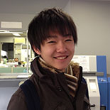 | 藤原 正明 |
| 工学研究科 環境共生工学専攻 修士課程 | |
| 緑あふれる広島県三次市出身。趣味は雑学を蓄える、食事をする、図鑑を眺めることです。高校まで野球をしていました。お酒は好きですが弱いです。将来の夢は過繁殖した水草や海ごみなど、環境問題を引き起こしている物質から新たな活用法を見いだし、マイナスをプラスにしていくーーそんな仕事に就くことです。 |
| 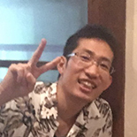 | 平 秀幸 |
| 工学研究科 環境共生工学専攻 修士課程 | |
| 創価大学通信教育部経済学部を卒業後、研究生を経て大学院に進学しました。現在は、メタン発酵消化液を用いた微細藻類の大量培養を行うため、消化液から効果的に栄養塩や微量金属を回収するための研究を行っています。 |
| 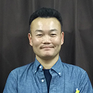 | 菊池 利典 |
| 工学研究科 環境共生工学専攻 修士課程 | |
| 企業に在職しながら、勉強させて頂いております。牡蠣についての研究を行いたいと考えており、皆様方に助けて頂きながら日々奮闘中です。より社会貢献が出来るように、はやく力を付けます。そして一人、おっさんです。しかも…チャキチャキです…。 |

|
鈴木 保菜美 |
| 工学研究科 環境共生工学専攻 修士課程 | |
| メタン発酵に関する研究を行っています。出身は東京都世田谷区で、それだけ言うとお金持ちに聞こえるようですが、実際は常に金欠です。好きな料理は中華料理（特に酢豚）、辛いもの。趣味は読書とざっくぅグッズを集めることです。実家がお蕎麦屋さんを営んでおり、常連さんとおしゃべりすること大好きです。 |

|
角石 由美 |
| 工学研究科 環境共生工学専攻 修士課程 | |
| 笑いの町、大阪出身。学部3年の授業で動物プランクトン(メス)に出会い、彼女達が持つ生きる力に感動しました。それ以来、彼女達の事をもっと知りたい！との想いで、今も動物プランクトンの研究をしています。将来は、戸田先生のように面白い授業ができて、さらに理科を通して生徒達にも生きる力を育める教師になることが目標です。 |
| 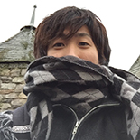 | 里吉 玄 |
| 工学研究科 環境共生工学専攻 修士課程 | |
| 研究テーマはメタン発酵の脱硫脱窒の複合プロセスです。 趣味は映画鑑賞、読書、動物を愛でる事です！ 最近はペットのヒョウモントカゲモドキのぽたに癒されてます笑 |
| 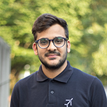 | Pranshu Bhatia |
| Master course student, Department of Envitomnental Engineering for Synbiosis, Graduate School of Engineering | |
| Hi. My name is Pranshu Bhatia and I am a first year master's student at Soka University in the faculty of Engineering. The topics in which I am interested are Waster Water Treatment and Production of high value Microalgae . I want to work in the field of environment to make this environment a better place to live in for all the living beings ( Humans , Animals and Plants ). I am really determined to work harder under my professor and my seniors. My hobbies are to do gardening , playing guitar and singing songs , watch movies and to hang out with friends. |
| 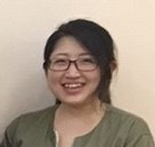 | 後藤 緑 |
| 工学研究科 環境共生工学専攻 修士課程 | |
| 山口県出身。海水性微細藻類の研究をしています。 気付けば学生生活の3分の1をマレーシアで過ごしています。 絵を描いたり料理したり…何か作るのが好きです。 あと海釣り、ロッククライミング、ウィンタースポーツとかもしてみたいです。 将来は、途上国の環境保全と経済成長の両立に貢献したいです。 |
| 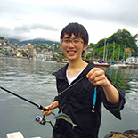 | 山本 翼 |
| 工学研究科 環境共生工学専攻 修士課程 | |
| 地元千葉から2時間半以上の通学し続けている、アニメ・漫画が好きな典型的な理系です。また、生き物と泳ぐことが好きで、中学・高校は生物部と水泳部に所属していました。好きなことが高じて、現在は海の動物プランクトンの研究をしています。将来的にも、好きなことに興じれる仕事に就きたいです！最近、学会などで分野の近しい友達ができるのが嬉しいです。 |
| 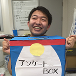 | 水野 直輝 |
| 工学研究科 環境共生工学専攻 修士課程 | |
| 山梨県甲斐市出身。10年ほど野球と書道をしてました。食べ物は鰻が好物で、嫌いな物はキノコ類や貝類、熟れた果物など。メタン発酵槽内の微生物に関する研究をしています。 |
| 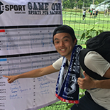 | 沖田 一弥 |
| 工学研究科 環境共生工学専攻 修士課程 | |
| 大阪府大阪市出身。小学生の頃からサッカーを始め中学、高校、大学共にサッカー部に所属し学生生活はサッカーに明け暮れていました。根っからのサッカー馬鹿です！現在はベトナムのホーチミンに留学しており、ホーチミン人文社会科学大学でベトナム語を学んでいます。将来はベトナムを始め、東南アジアの発展に貢献する人間になることです！ |
| 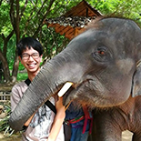 | 田中 健児 |
| 理工学部 環境共生工学科 4年 | |
| 理工学部共生創造理工学科一期、三年生の田中健児です。趣味はお出かけ・旅行です。三年時には一か月程東南アジア周遊をしており、エスニックな雰囲気を最高に楽しみつつ、衛生観念もちょっと逞しくなりました。研究室では優秀すぎる先輩方にお世話になりながら、藻類培養をしています。夢は何かの分野で○○の権威と呼ばれるようになりたいです！ |